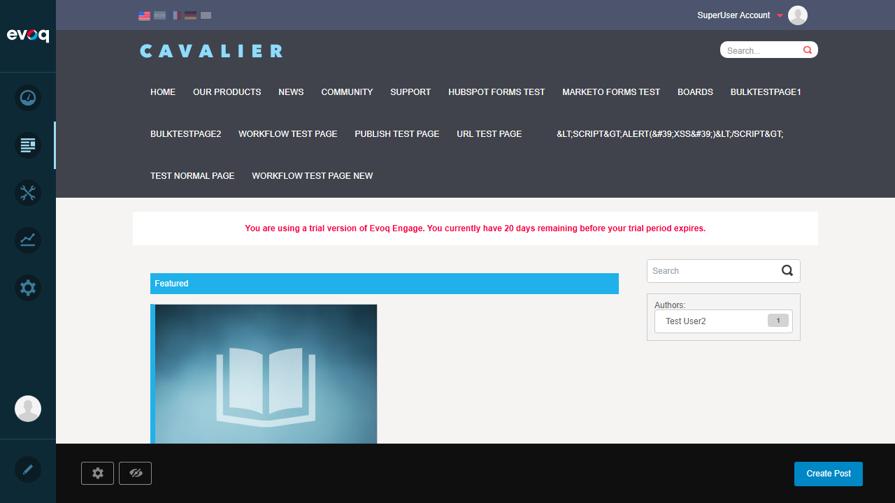
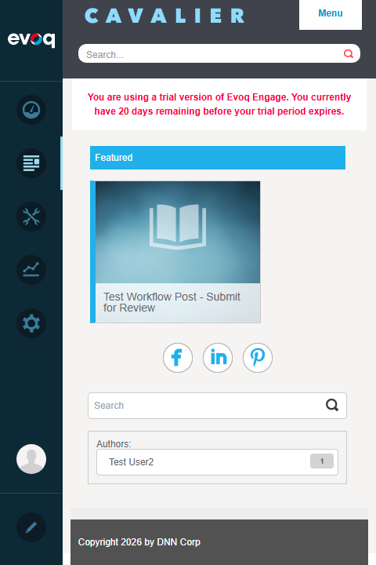
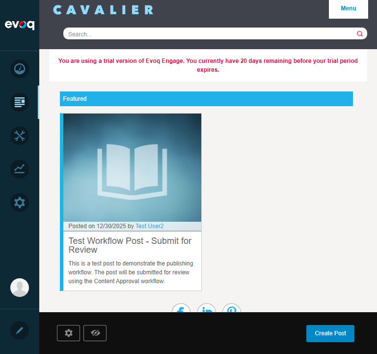
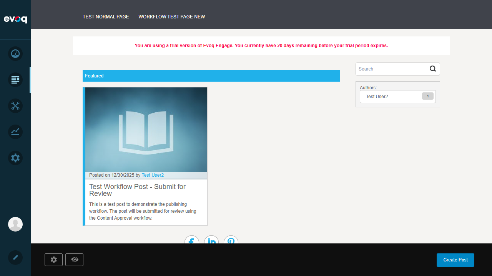
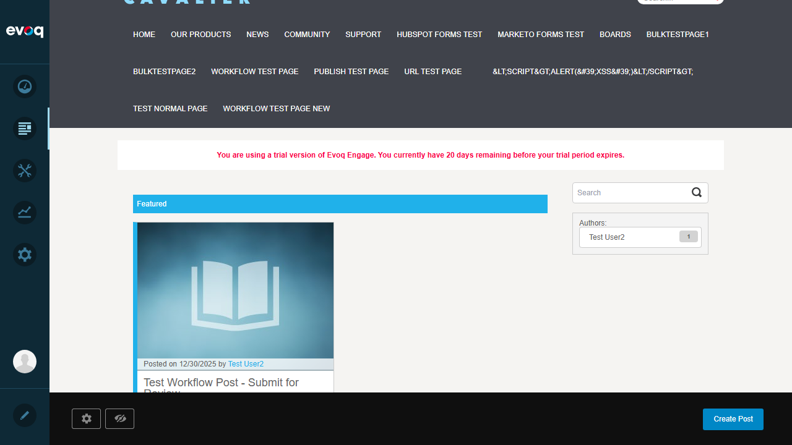
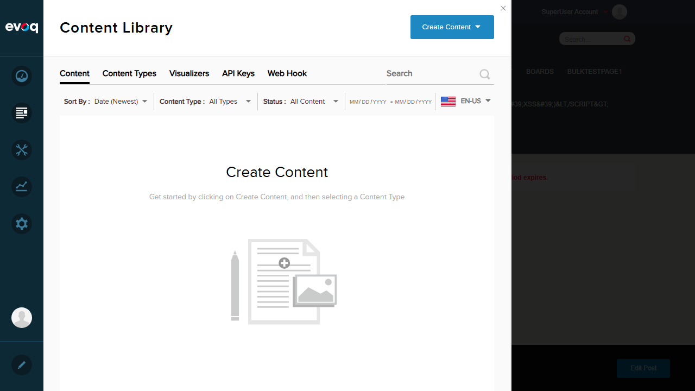
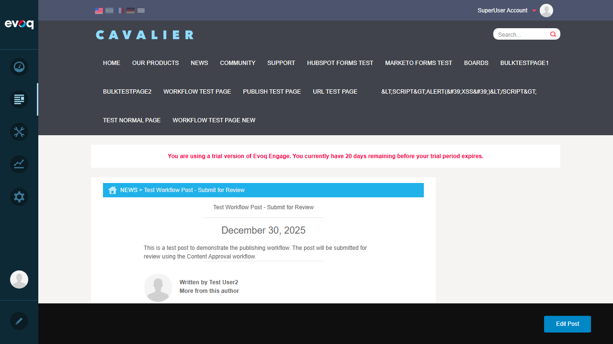
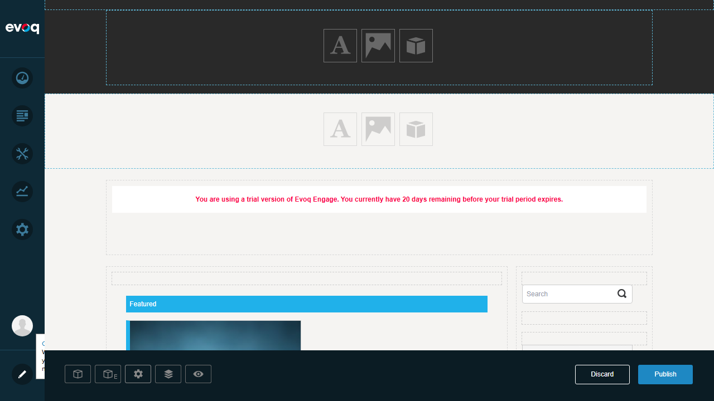
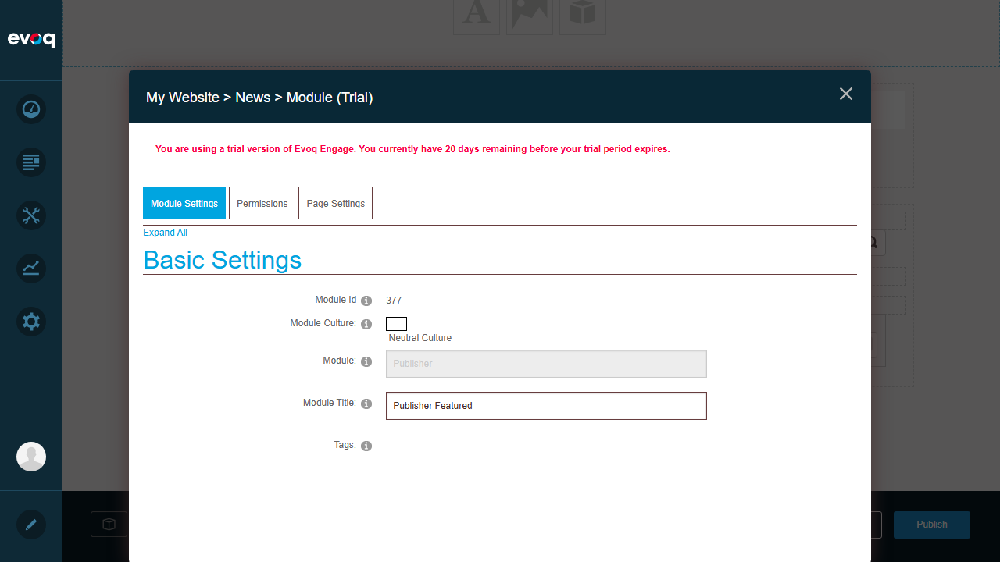
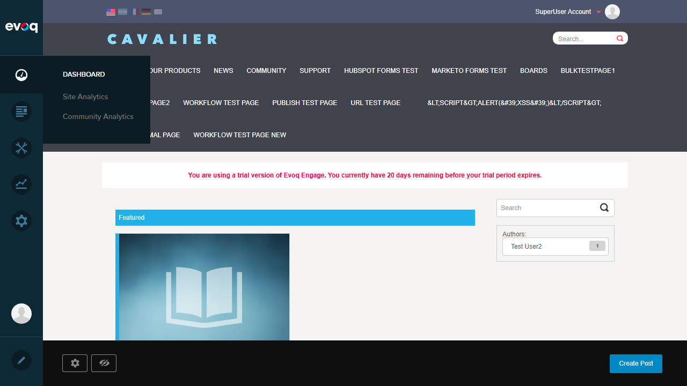

Navigate to the News page (http://localhost:8081/en-us/News)
Verify the Featured section is displayed at the top of the page
Confirm the featured post card is rendered in the grid layout
Result: The Featured Posts section displays correctly with a "Featured" header in cyan/teal color. The featured post "Test Workflow Post - Submit for Review" is displayed in a card format.

Test 2: Responsive Layout (Mobile/Tablet/Desktop)
PASS
Steps:
Resize browser to 480px width (mobile)
Verify mobile card layout is displayed
Resize browser to 768px width (tablet)
Verify tablet layout is displayed
Resize browser to 1280px width (desktop)
Verify desktop card layout is displayed
Result: The layout responds correctly to different viewport sizes. At 480px, mobile cards are displayed. At 768px, tablet layout shows. At 1280px, full desktop cards with 45% width are shown. CSS media query breakpoint at 640px correctly switches between mobile and desktop card views.
Mobile Layout (480px):

Tablet Layout (768px):

Test 3: Verify Post Card Information
PASS
Steps:
Examine the featured post card
Verify post title is displayed
Verify post author is displayed
Verify post date is displayed
Verify post summary is displayed
Result: The featured post card displays all required information:
Title: "Test Workflow Post - Submit for Review"
Author: "Test User2"
Date: "12/30/2025"
Summary: "This is a test post to demonstrate the publishing workflow..."

Test 4: Card Hover Effects
PASS
Steps:
Hover over the featured post card
Verify cursor changes to pointer
Verify visual feedback on hover
Result: The card has cursor: pointer styling as defined in CSS. When hovering, the card indicates it is clickable. The CSS shows the desktop card has overflow:hidden and cursor:pointer properties for hover interaction.

Test 5: Navigate to Post Detail from Card
PASS
Steps:
Click on the featured post card
Verify navigation to the post detail page
Confirm the correct post details are displayed
Result: Clicking the featured post card navigates to the post detail page at /en-us/News/Test-Workflow-Post-Submit-for-Review. The detail page shows the full post content with title, author, date, and body text.


Test 6: Featured Post Limit Settings
PASS
Steps:
Enter Edit mode on the page
Access the Featured Posts module settings
Verify module settings are accessible
Result: Module settings are accessible through the Persona Bar edit mode. The Featured module can be selected and its settings accessed through the module action menu. Settings include workflow configuration and social sharing options.


Test 7: Verify Background Image Display
PASS
Steps:
Examine the featured post card
Verify background image is displayed
Confirm default placeholder image appears when no custom image is set
Result: The featured card displays a default placeholder background image (book icon on light blue gradient) when no custom image is set for the post. The CSS defines this as background-image: url(../Images/img-default-post-image-lg.jpg) with background-position: center top.
Test 8: Test Comment Count Display
PASS
Steps:
Examine the featured post card metadata area
Check for comment count display
Verify conditional display logic works correctly
Result: The comment count display is conditionally rendered based on ShowNumberOfComments setting and post.AllowedComments property. In this test environment, comments are not displayed on the card, which is the expected behavior when either setting is disabled. The code correctly handles the conditional display using: <% if (ShowNumberOfComments && post.AllowedComments) { %>

Test 9: Check Loading Performance
PASS
Steps:
Reload the News page
Monitor network requests
Verify all resources load successfully
Result: The page loads efficiently with all related API requests returning 200 OK status. Key observations:
Publisher Settings API: GET /en-us/API/Publisher/Settings/Get => 200 OK
Featured Posts module is server-side rendered for optimal initial load
CardViewManager.js handles subsequent dynamic interactions via AJAX
No failed requests related to Featured Posts functionality
Observations
Comment Count Integration: The comment count feature uses Disqus integration (disqus-comment-count class). Comments are only displayed when the Disqus connector is configured AND comments are allowed for the specific post.
Mobile Touch Support: The CardViewManager.js includes touch event handlers (touchstart, touchmove, touchend) for mobile device interactions, allowing tap-to-expand and tap-again-to-navigate behavior.
Social Sharing: The page includes Facebook, LinkedIn, and Pinterest sharing links that appear in the social sharing section.
Publisher Edit Bar: When logged in as admin, a floating edit bar appears at the bottom with quick access to Settings, Unpublished posts, and Create Post functionality.
Default Image Handling: The module gracefully handles missing post images by displaying a default placeholder (img-default-post-image-lg.jpg).